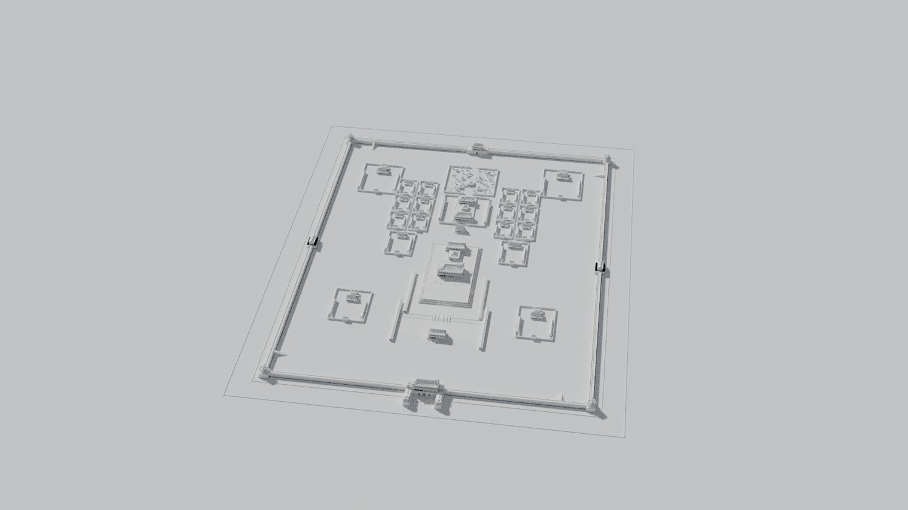
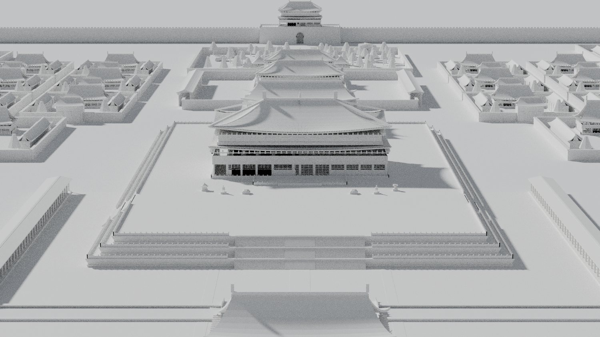
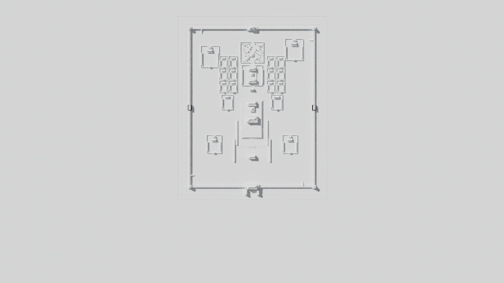

01
宫阙疑云：第七码
2026.11紫禁城白模 × 第一人称悬疑推理游戏



把已有的故宫白模直接搬进浏览器：按语义分区导出 11 个 GLB，用射线采样烘出 1.5 m 精度的可行走网格，再在上面做一个 14 章、4 结局的推理游戏。
模型是纯外壳——门洞没开洞、殿内没楼板，所以补了 35 条授权通道（台阶、登城梯、城门门洞、18 组宫院门）和 14 个程序化室内场景。这不是修图，是把不能走的地方变成能走。
- 规模961 × 753 m ｜ 4180 构件 ｜ 49.8 万顶点 ｜ 11 个分区 GLB
- 走格1.5 m 精度高度场 + 阻挡图；52 个锚点全部可站，98.2% 连通
- 内容14 章 ｜ 98 任务 ｜ 130 线索 ｜ 22 NPC ｜ 420 对话节点 ｜ 4 结局
- 技术Blender 4.0 CPU（容器）· Python 参数化 · Three.js r180 · WebAudio 合成音效
- 状态可玩，已上线；真机像素与帧率待测